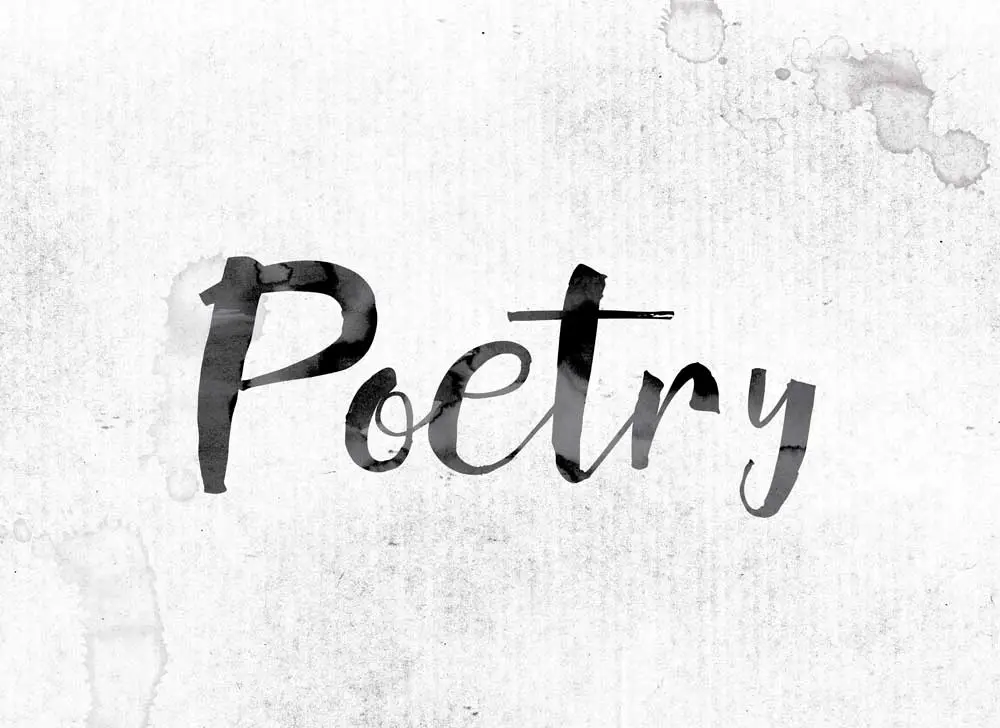

Alyssa's first Blog Post
October 1, 2022 by Alyssa Walker

The meaning of a poem is the message the poet gives to the reader.
It is a literature that evokes a concentrated imaginative awareness of experience or
a specific emotional response through language chosen and arranged for
its meaning, sound, and rhythm. Most persons fail to realize the beauty of poetry because to them
there is too much interpretation involved. The lines are supposed to appeal to your emotions
and encourage reasonability. Poetry is written through love of the art by most and means of an escape
for others. Poetry was also written as a way to express many emotions and thoughts for just about every possible reason conceivable.
A few famous poets include Maya Angelou, Miss Louise Bennett Coverly
William Shakespeare, Lauren Hill and Oscar Wilde. These poets have different writing
style which allows them to bring a sense of uniqueness to the
world of poetry.
Cross-Layer Security: A Holistic View of Internet Security
September 20, 2022 by Henry Birge-lee

On February 3, 2022, attackers launched a highly effective attack against the Korean cryptocurrency
exchange KLAYswap. We discussed the details of this attack in our earlier blog post “Attackers exploit
fundamental flaw in the web’s security to steal $2 million in cryptocurrency.” However, in that post we
only scratched the surface of potential countermeasures that could prevent such attacks. In this new post,
we will discuss how we can defend the web ecosystem against attacks like these. This attack was composed of
multiple exploits at different layers of the network stack. We term attacks like this, “cross-layer attacks,” and
offer our perspective on why they are so effective. Furthermore, we propose a practical defense strategy against them
that we call “cross-layer security.”
As we discuss below, cross-layer security involves security technologies at different layers of the network stack
working in harmony to defend vulnerabilities that are difficult to catch at a single layer alone. he difficulty of fully
protecting against cross-layer vulnerabilities like these is that they exploit the interactions between the different layers
involved: a vulnerability in the routing system can be used to exploit a weak link in the PKI, and even the web-development
ecosystem is involved in this attack because of the way javascript is loaded. The cross-layer nature of these vulnerabilities
often leads developers working in each layer to dismiss the vulnerability as a problem with other layers.